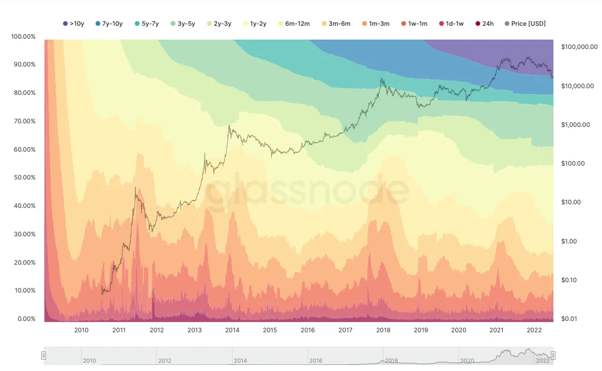
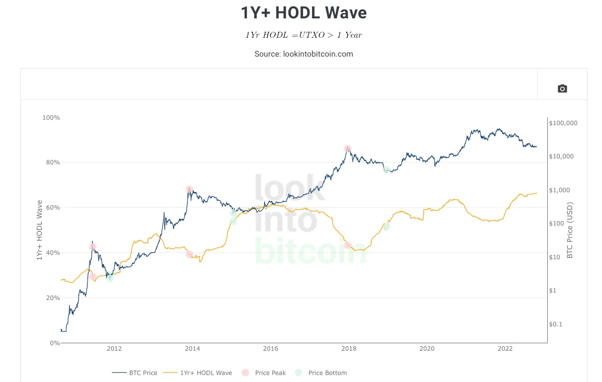
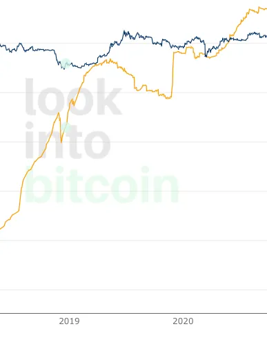
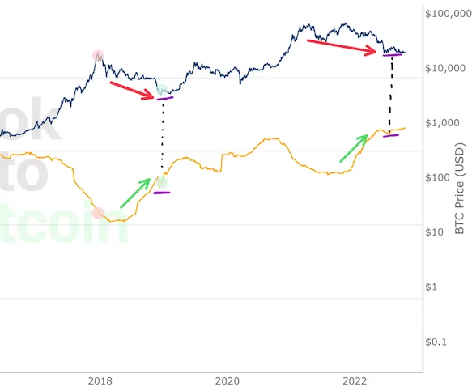

₿ottom?
So as it turns out $14 trillion of new global fiat over a decade is a hell of an economic rubber band...
Despite its internal invulnerability to human nature, Bitcoin's external denomination in USD is unfortunately still subject to miscarriages of macroeconomic justice. Still, poorly predicting Bitcoin's future is a lot more fun and valuable than guessing how the senile group of boomer theatre kids who someone put in charge of the world economy will somehow fuck up worse than expected AGAIN.
There is still great things about our internet money though, all DATA is BROADCASTED to EVERYONE instead of receiving one infantile percentage calculation at the start of every month that hundreds millions of people are forced to swallow without being able to question how it is derived, like a Sackler Family pharmaceutical. THIS is why the beloved On-Chain Analysis will prevail as one of the most valuable attributes of Bitcoin as the future global monetary network… kinda funny/sad how the unwavering corruption and infinite theft from 99.999% of the population is what GIVES the On-Chain data transparency it's value.
Being simultaneously exposed to these preexisting macroeconomic factors and the continuous exploits of human nature via ShitCoins like Luna and Ponzi exchanges like Celsius, Bitcoin is in a similar position to that dog in the meme with the house fire, because really everything is fine (but the house IS on fire). OK, done ranting…
Market Performance
- YTD performance: -59%
- One month performance: -35%
- From ATH: -74%
- February 2020 - ATH: 565%
- February 2020 - Current: 128%
HODL WAVES
The HODL Wave chart can appear confusing (even though it looks cool) especially if you don’t recognize the metrics being displayed. Simply put the waves shrink and expand to display the % of supply owned in respect to how old the coins are (when they last moved). This is very useful for seeing who’s buying ₿ and who’s selling it to them in terms of age, and will be useful to identifying when strong demand will resume which I will touch on later. The following chart helps simplify things a bit more, focusing on a single group as a line with another axis rather than all at once.
Behavior of coins held for over a year in the “1Y+ HODL Wave” helps identify the status of the market specific to long term holders (LTH) and their held supply. It is important to note as well that this metric accounts for EVERY coin that hasn’t moved in over a year, so as time goes on and more coins are lost & forgotten the % of supply not moved in over a year will continue to reach new highs at certain points. Thinking about the most likely holders of these coins (Miners, HODLers, Whales/Institutions) can help understand the real decisions being made by market participants.
One great example is during November 2018…
- Price declines to $6,400 down 67% from the $19,300 ATH
- Leads to capitulation, falling to ~$3,000 or another -50%
- LTHs (Long Term Holders) forced to liquidate their position (NU-P/L)
- Causes >3% decrease in 1Y+ band (Peak Capitulation// Price Bottom!)
- Almost exactly 1 year later 1Y+ band rises 5% (Highest increase in < 1wk EVER)
The most valuable observation here is the capitulation event that ultimately be identified as the point where LTH demand resumed, shown by the 1Y+ band a year later, and a price bottom was found. Only problem is this took over a year to become verifiable, so the best data that can be leveraged in real-time would be attempting to identify the capitulation event in this “cycle” (cycles are fake) based on similarities of 2014 & 2018 and how they may reveal themselves today.
Attempting to apply this to the market today strong signs of a similar narrative developing are apparent. Beginning 2022 the distribution stopped and the >1Y band begins another sharp increase and now what APPEARS to be another capitulation event. The similarities drawn between these and previous cycles are valuable, however there are a few things to consider when interpreting this data:
- Coins lost, forgotten or moved into long term cold storage over time. This should result in the >1Y band peaking decently higher in each bear market. Previous: 63%; Current: 66.4%.
- Macro environment could create anomalies in the data.
- LTH flows, especially largest ones, today are much more liquid entities; Mining companies that trade on the NYSE and are exposed to that much liquidity are much less likely to capitulate than their 2017-18 counterparts who did not have the same liquidity available.
Realized Cap & Unrealized Profit & Loss

Net Unrealized Profit & Loss is a great indicator on it’s own for taking the temperature of the market at any given time, but should not be interpreted as telling the entire story of price (like any on-chain metric). It can simply be thought of as the “average” return of any ₿ holder at a given time.
Currently:
- ₿ investors down -10%
- Peak losses were -16% this June
- Peak gains were +75% on February 21, 2021
Although it is a metric derived directly by ₿ price (Mkt. cap - Realized cap / Mkt. cap) NUPL tends to be a Leading indicator both on the way up and on the way down. This can not always be counted on, but observing the way NUPL moves with price you can see how it rarely moves gradually after being at one extreme another (>50% or < 0%). This is very interesting, and I believe can be attributed to the strong LTH base bitcoin has.
Times of negative NUPL are typically exited with small upward price movements that cause a rapid NUPL increase, followed by another rapid NUPL increase that is likely a combination of LTHs who are now making a positive return “doubling down” along with new market participants entering. (See Oct. 2015 and April 2019 for examples)
A similar dynamic can be observed when NUPL is running hot above 50% profit. As ₿ price approaches, naturally NUPL also reaches a peak. What happens though is before a broader market selloff it can be observed that NUPL begins to decline, as older market participants sell their coins to newer market participants who will subsequently make a lower % profit. A great example of this is illustrated in the 2017 bull market:
- November 12, 2017, ₿ Price: $6,090, NUPL: 61%
- June 19, 2018, ₿ Price: $6,500, NUPL: 19%
- (Also see Summer 2019 + all of 2021)
The fact that in just over 6 months the price of ₿itcoin could increase by 7% but the market participants in aggregate profit 40% LESS is eye-opening to the way one should look at price discovery in this market.
Conclusion
Neither metric alone will be able to explain the full story of the market, not do they serve as basis to justify future results. The data can provide a layer of insight when put into context, and especially when illustrated in confluence with other relevant metrics.
For example, with the metrics used here, notice that in the sustained periods of negative NUPL the +1Y band has always increased. Now this does not mean this will ALWAYS be the case, however, it does mean that LTHs have a low time preference that will likely be able to withstand sustained losses (-20%,-30%,-40%) long enough for demand to resume, without giving up more than 10-15% of the stack they had from the price peak.
How does this translate to today? Currently:
- NUPL: -10.6%
- +1Y: 66.4%
What's known is that the LTHs can sustain these losses along with the ability to sustain up to another 10-15% losses without much negative change to the +1Y band. Along with this, we know that the +1Y band is at it's ATH.
What’s unknown is at what point at which +1Y holders will capitulate and send price into a downward spiral and the NUPL to below -40% like late 2018. The reality of this is it could have already happened as well, in the move this May from $30k→ $20k where the +1Y band decreased ~1-2%. Also the likely peak the +1Y band will reach, based on how the market has developed since it’s previous peak and at what price/NUPL they will part with those coins again.
This piece is probably confusing at best, just wanted to collect & evaluate what I’ve observed most recently on-chain, but cool data nonetheless, and hopefully one fool like me finds a part of it useful and this analysis can be looked back upon as the market develops.